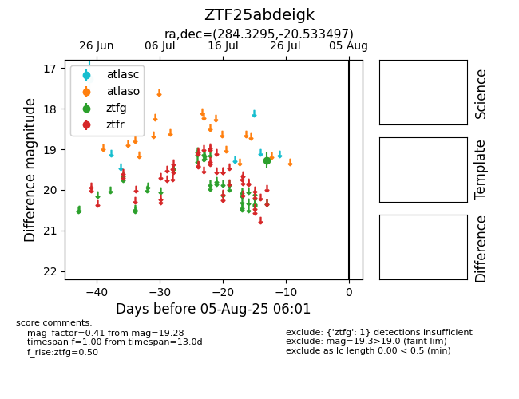

Target ZTF25abdeigk at 2025-08-05 06:01, see:
FINK: fink-portal.org/ZTF25abdeigk
Lasair: lasair-ztf.lsst.ac.uk/objects/ZTF25abdeigk
ALeRCE: alerce.online/object/ZTF25abdeigk
alt names
ZTF25abdeigk (ztf,fink)
coordinates:
equatorial (ra, dec) = (284.3295,-20.53350)
galactic (l, b) = (15.0961,-10.44665)
photometry
last atlasc=17.27, ztfg=19.28
1 atlasc, 1 ztfg detections
